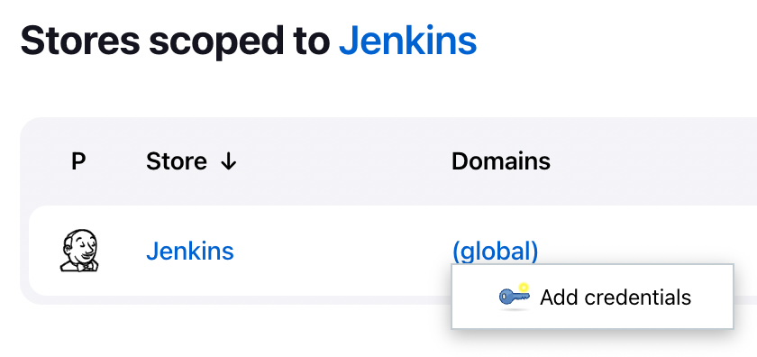
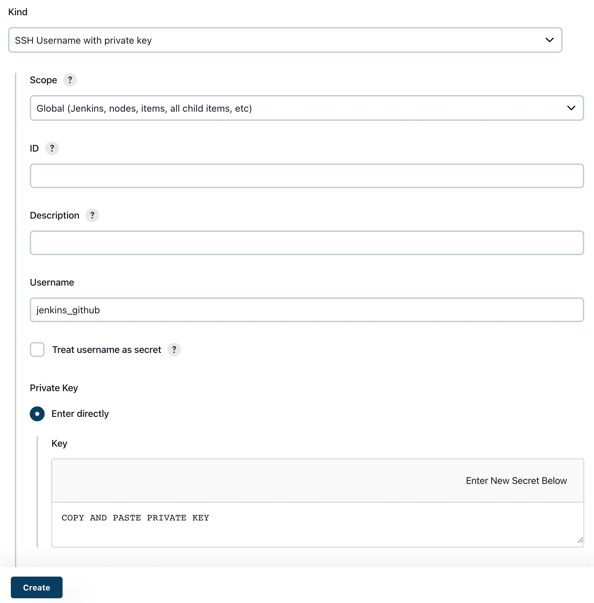
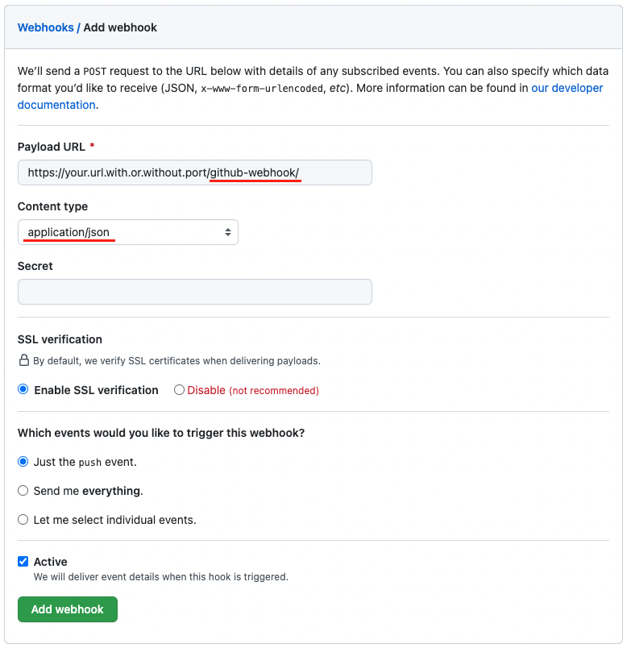
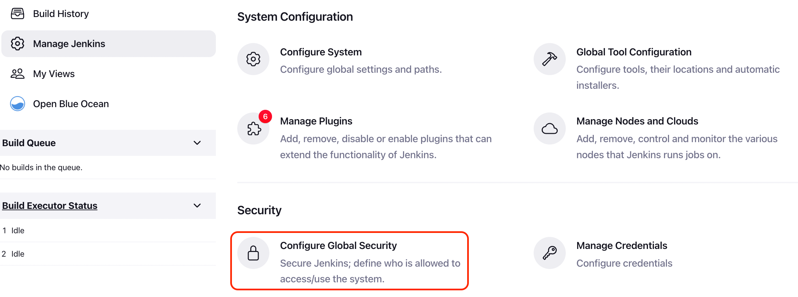
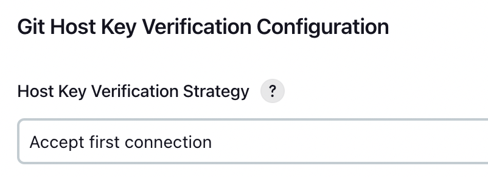

Github Integration
Table of contents
Setup
One way to install and experiment with Jenkins locally is to use Docker.
Necessary steps are well documented and thoroughly explained in the official documentation.
It is easier to manage the containers if you transcribe the commands in the docs to a docker-compose file.
Deployment key for Github repo
Generate a key pair in Jenkins container
Suppose you have a Jenkins container named jenkins running locally,
exec a shell in the container and generate a key pair in /var/jenkins_home/.ssh:
docker exec -it jenkins bash
mkdir -p /var/jenkins_home/.ssh
ssh-keygen -t ed25519 -f /var/jenkins_home/.ssh/jenkins_github
You will now have a key pair named jenkins_github in /var/jenkins_home/.ssh.
Add private key to Jenkins credentials
Now log in to Jenkins Dashboard and navigate to Manage Jenkins > Manage Credentials.

Click on Add Credentials and select SSH Username with private key from the dropdown.


Copy the contents of jenkins_github and paste it in the Private Key field.
Add public key to Github repo
Go to your Github repo and navigate to Settings > Deploy keys.
Copy the contents of jenkins_github.pub and paste it in the Key field.
GitHub webhook for Jenkins
If you have not chosen to Install suggested plugins during the Jenkins setup, you may need to install Git plugin and GitHub plugin manually.
To create a GitHub webhook, you need a working public URL. If you do not have one, you can use ngrok, etc. to create a forwarding URL for your Jenkins exposed port.
Go to your Github repo and navigate to Settings > Webhooks > Add webhook.

Payload URL: Must be appended with/github-webhook/to work with the GitHub plugin.Content type: Must be set toapplication/json.
Create a Jenkins item
TBA
No ECDSA error
If you encounter the following error while configuring the URL for the repo,
No ECDSA host key is known for github.com and you have requested strict checking.
Navigate to Manage Jenkins > Configure Global Security,

Find Git Host Key Verification Configuration and set Host Key Verification Strategy to Accept first connection.
